Strawberry Overnight Oats
Oats, Greek yogurt, fortified milk, strawberries, chia seeds, and walnuts.
21 meal and snack ideas
Simple meals and snacks that provide nutrients important for healthy hair.
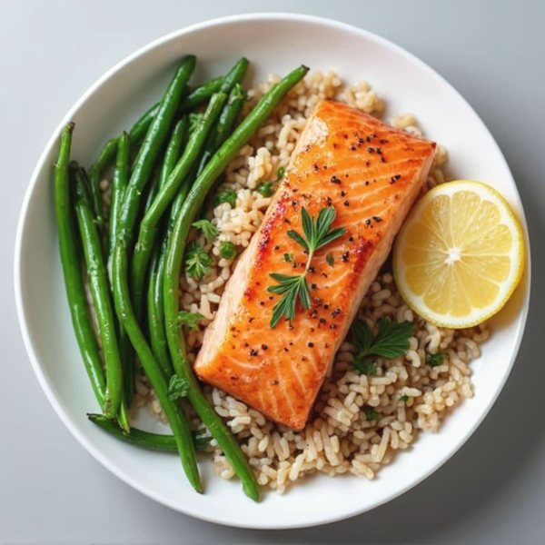
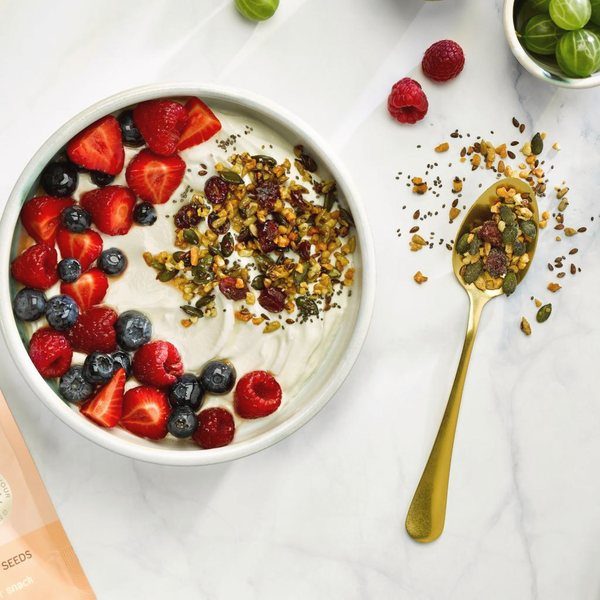
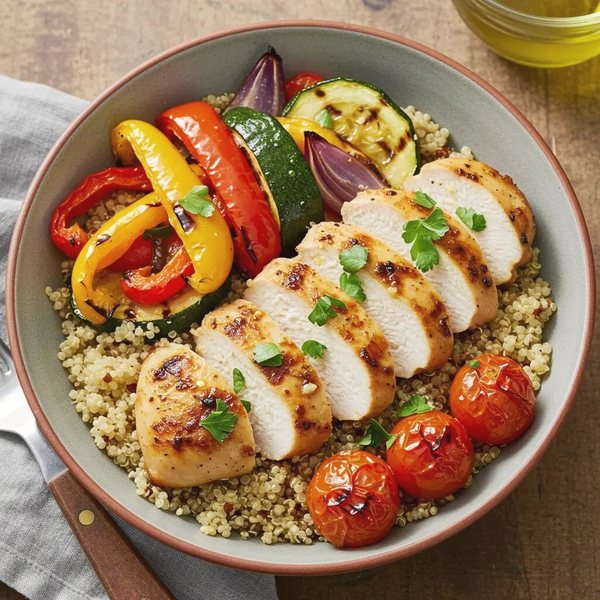
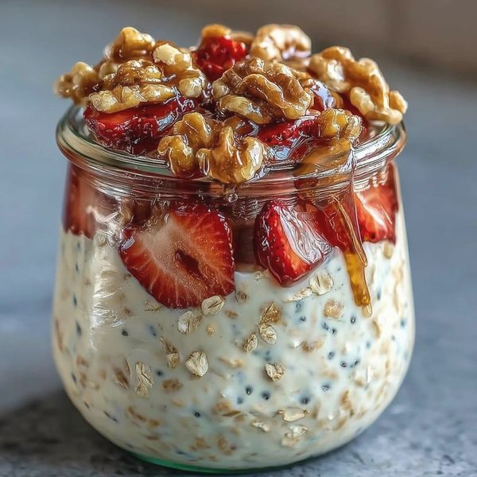
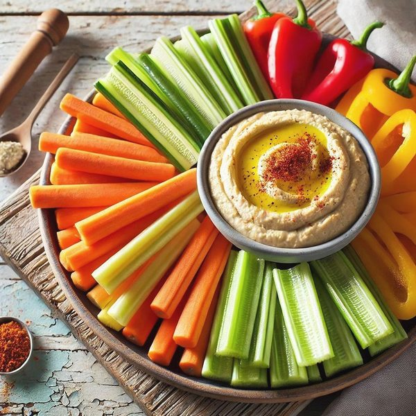
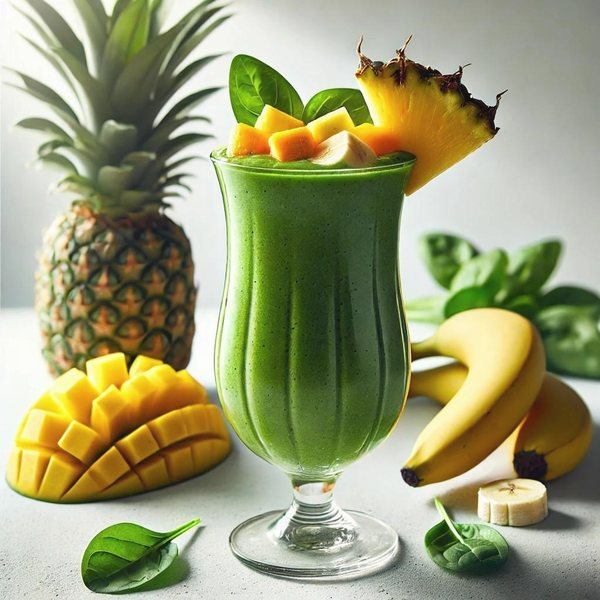
Holly Forbes, RDN The Hair Loss Nutritionist
Mane Meals · The Everyday Edition
Eating to support your hair doesn't have to mean buying expensive superfoods, following a strict meal plan, or making something different every day.
Mane Meals: The Everyday Edition brings together 21 meal and snack ideas that provide nutrients important for healthy hair.
You'll find meals for busy mornings, quick lunches, and evenings when you barely feel like cooking. Many use similar ingredients in different ways, giving you more variety without having to start from scratch every day.
The goal isn't to follow every meal exactly. It's to give you ideas you can come back to, adapt, and make your own.
How to use this guide
There's no schedule to follow and no particular order to eat these meals.
You'll also see the nutrients highlighted under each meal, so you can recognize how everyday foods contribute to nourishing your hair.
Please noteThese meal ideas are meant to support your overall nutrition. They aren't intended to diagnose, treat, or reverse hair loss.
Your nutrient key
Your hair follicles need a steady supply of energy and nutrients to function properly. These 10 nutrients support different parts of that process, from building hair strands to maintaining healthy cells and scalp tissue.
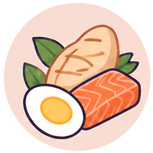
Provides the amino acids needed to build keratin, the main protein in hair.
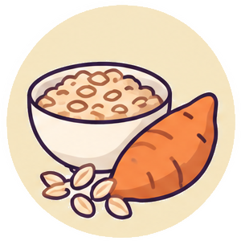
Supply energy that helps fuel your body's normal functions, including hair growth.
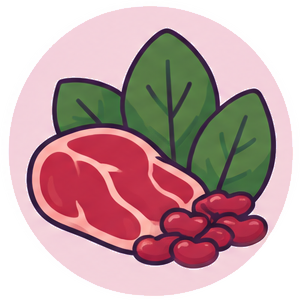
Helps carry oxygen throughout the body, including to tissues that support hair growth.
Supports cell growth, tissue repair, and normal hair follicle function.
Plays a role in hair follicle cycling and normal immune function.
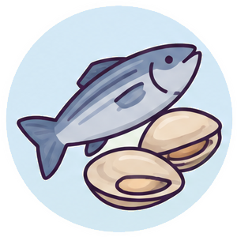
Supports red blood cell production and DNA synthesis, both important for rapidly dividing cells.
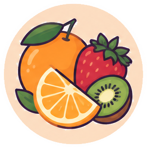
Supports collagen production and helps your body absorb iron from plant foods.
Helps your body metabolize nutrients for energy and supports normal cell function.
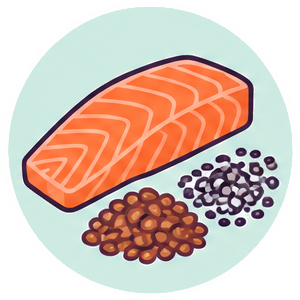
Provide essential fats used in cell membranes and help regulate inflammatory processes.
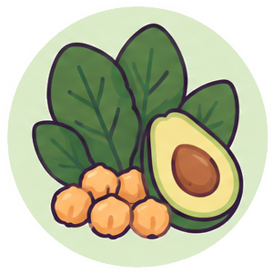
Supports DNA synthesis and cell division, processes needed for normal hair follicle activity.
Reading the meals
The nutrient highlights show which of the 10 nutrients the foods in each meal contribute. They aren't guaranteed amounts, and they aren't meant to correct a deficiency.
The Mane Meals
Oats, Greek yogurt, fortified milk, strawberries, chia seeds, and walnuts.
Fortified milk or soy milk, protein powder, frozen mango, pineapple, spinach, and ground flaxseed.
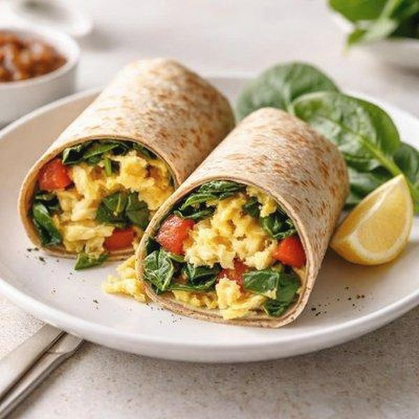
Scrambled eggs, tomatoes, spinach, and cheddar cheese in a whole-wheat tortilla, with orange slices or berries.
Greek yogurt, fresh berries, granola, chia seeds, and pumpkin seeds.
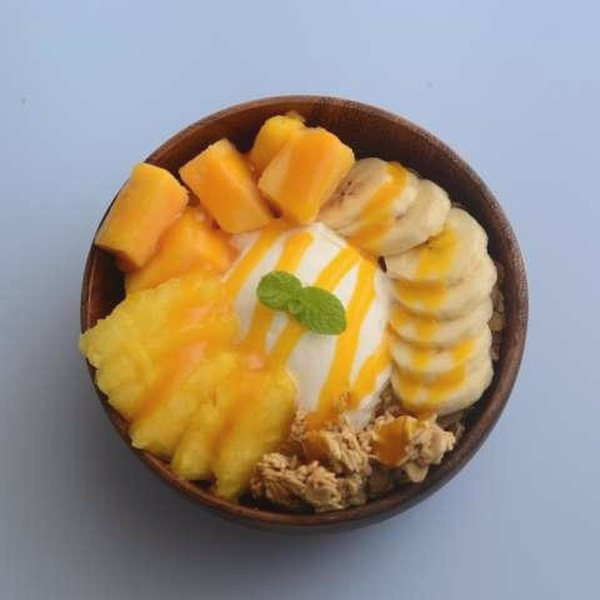
Greek yogurt, mango, pineapple, banana, granola, and pumpkin seeds.
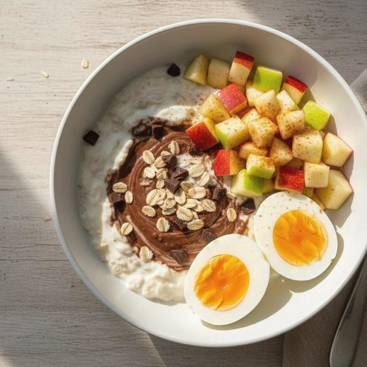
Oatmeal made with fortified milk, diced apple, cinnamon, and ground flaxseed, with boiled eggs on the side.
*Vitamin D content depends on the type and fortification of the milk or milk alternative used. Check the product label.
The Mane Meals
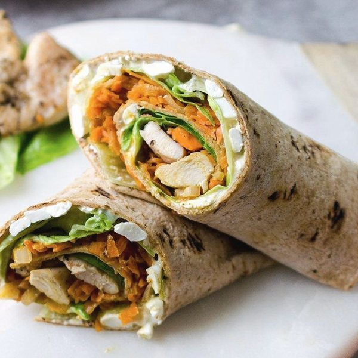
Precooked chicken, whole-wheat tortilla, lettuce, shredded carrots, feta cheese, and Greek yogurt dressing.
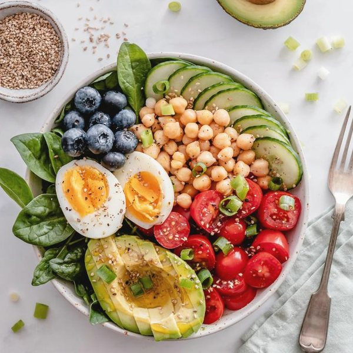
Chickpeas, boiled eggs, spinach, tomatoes, avocado, cucumbers, and blueberries.
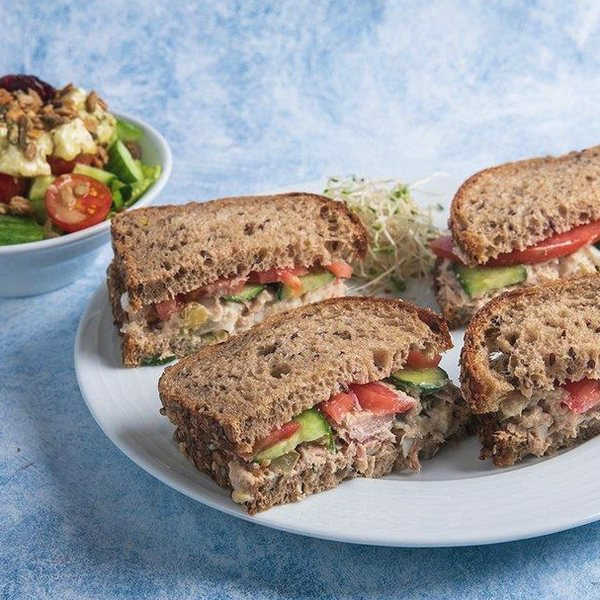
Canned light tuna, Greek yogurt or mayonnaise, whole-grain bread, tomato, cucumber, feta cheese, olive oil, and lemon juice.
Chicken, quinoa sautéed with onions, and grilled tomatoes, bell peppers, and zucchini.
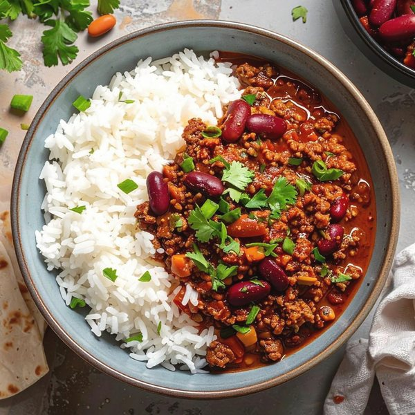
Turkey, kidney beans, rice, tomatoes, and a vegetable of your choice.
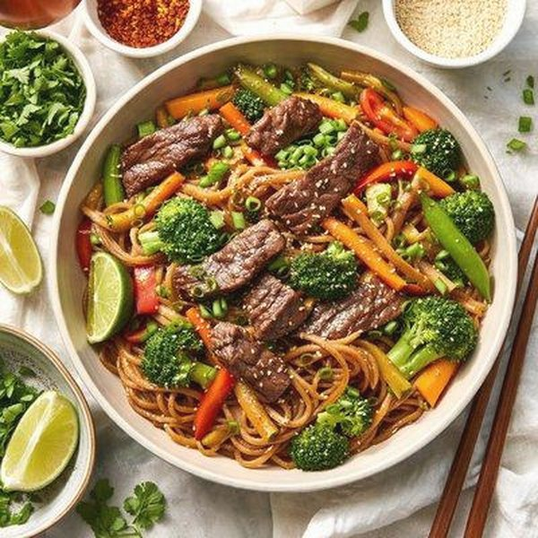
Beef strips, whole-wheat noodles, frozen broccoli, carrots, and peppers.
The Mane Meals
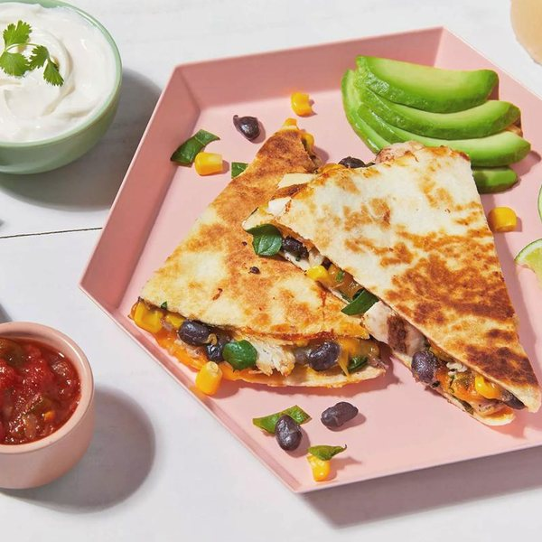
Whole-wheat tortilla filled with precooked chicken, black beans, shredded cheese, and spinach. Served with a small bowl of salsa and avocado.
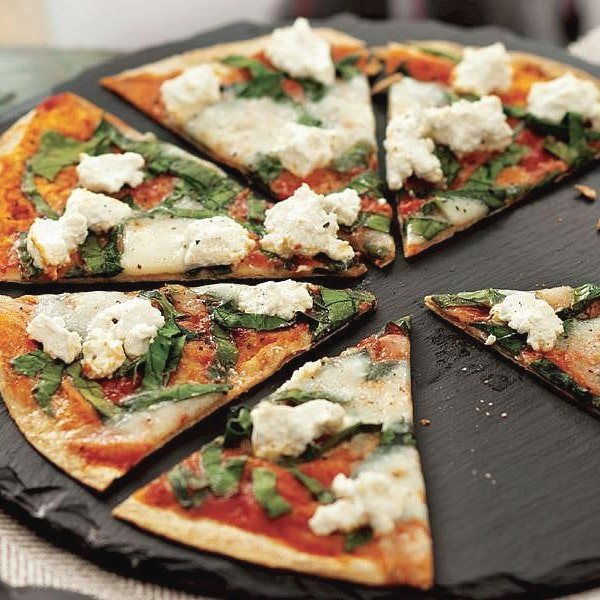
Whole-wheat tortilla topped with tomato sauce, mozzarella, and fresh spinach.
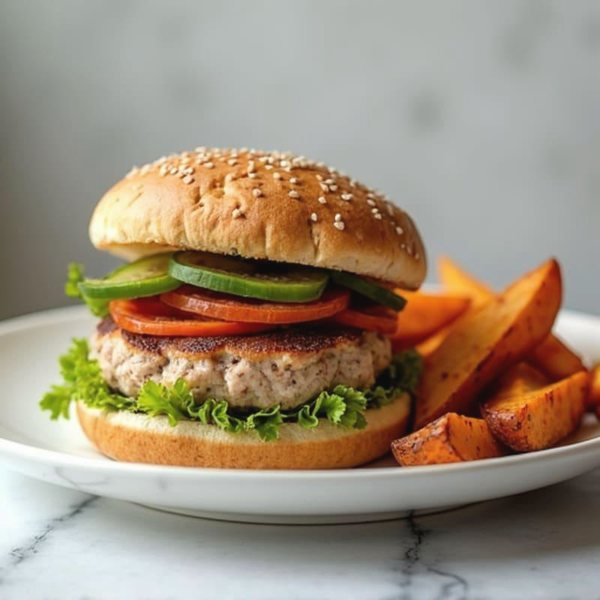
Turkey patty, whole-grain bun, lettuce, tomato, and roasted sweet potatoes.
Salmon glazed with sweet Thai chili sauce, seasoned rice, and green beans.
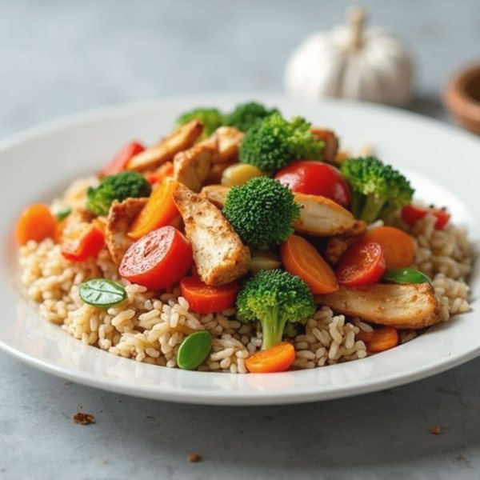
Chicken, fresh broccoli, peppers, carrots, and rice.
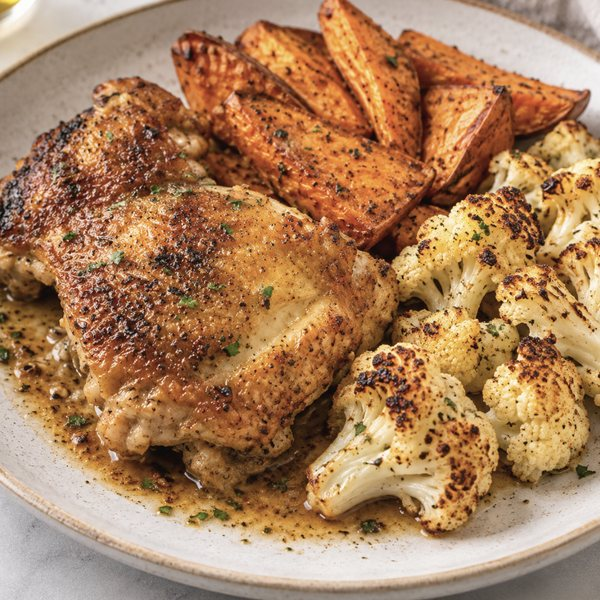
Chicken thighs, sweet potatoes, and cauliflower.
The Mane Meals
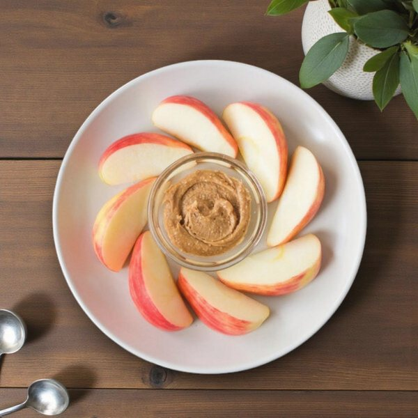
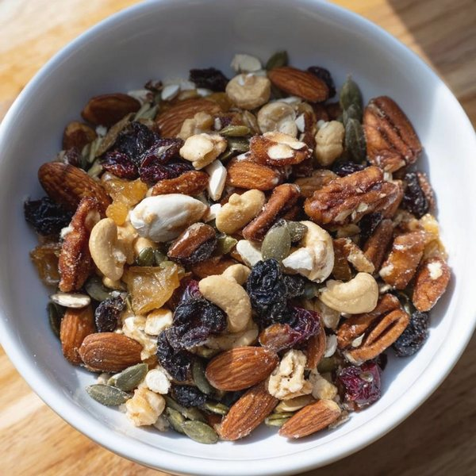
Carrots, celery, and bell peppers.
Before you go
Supporting your hair through nutrition isn't about eating perfectly or following a meal plan down to the last detail.
It's about finding ways to include nourishing foods consistently, in a way that works for your life.
Start with a few meals that sound good to you. Repeat them, change them up, and build a rotation you enjoy.
Small, consistent choices can help you build a stronger nutrition foundation over time.